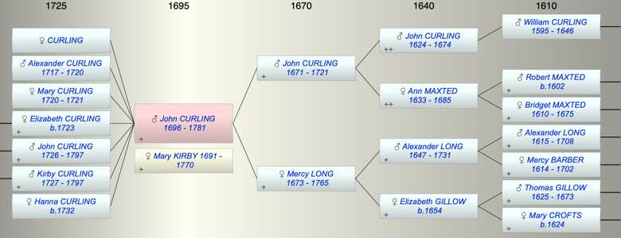

| [Index] |
| John CURLING (1696 - 1781) |
|  |
| b. 1696 at St Laurence |
| m. Mary KIRBY (1691 - 1770) |
| d. 1781 at Barham aged 85 |
| Parents: |
| John CURLING (1671 - 1721) |
| Mercy LONG (1673 - 1765) |
| Children (7): |
| CURLING |
| Alexander CURLING (1717 - 1720) |
| Mary CURLING (1720 - 1721) |
| Elizabeth CURLING (1723 - ) |
| John CURLING (1726 - 1797) |
| Kirby CURLING (1727 - 1797) |
| Hanna CURLING (1732 - ) |
| Events in John CURLING (1696 - 1781)'s life | |||||
| Date | Age | Event | Place | Notes | Src |
| Married Mary KIRBY | Note 1 | ||||
| 1696 | John CURLING was born | St Laurence | Note 2 | ||
| 1717 | 21 | Birth of son Alexander CURLING | Barham | Note 3 | |
| 1720 | 24 | Birth of daughter Mary CURLING | Barham | Note 4 | |
| 25 Aug 1720 | 24 | Death of son Alexander CURLING (aged 3) | Barham | Note 5 | |
| 1721 | 25 | Death of father John CURLING (aged 50) | St Laurence | ||
| 06 Apr 1721 | 25 | Death of daughter Mary CURLING (aged 1) | Barham | Note 6 | |
| 1723 | 27 | Birth of daughter Elizabeth CURLING | Barham | Note 7 | |
| 1726 | 30 | Birth of son John CURLING | Barham | Note 8 | |
| 1727 | 31 | Birth of son Kirby CURLING | Barham | Note 9 | |
| 1732 | 36 | Birth of daughter Hanna CURLING | Barham | Note 10 | |
| 1765 | 69 | Death of mother Mercy LONG (aged 92) | St Laurence | Note 11 | |
| 29 Jul 1770 | 74 | Death of wife Mary KIRBY (aged 79) | Barham | aged 78 ex MI at Barham | |
| 1781 | 85 | John CURLING died | Barham | Note 12 | |
| Personal Notes: |
|
Cotton has John married to Elizabeth Kirby but we can find no record of the marriage or any children of John and Elizabeth Curling that would fit the time scale. We know that a John Curling of Barham married Mary Kirby of St Peters on 10 Jan 1716 at St Peters. Given that Cotton confused William and Henry Harnett as husband of John's sister Elizabeth it is very possible that he confused Elizabeth and Mary Kirby as wife of John. There are several pieces of evidence to support this:
1. John Curling of Barham died Jan 24 1781, aged 84 ie born 1697 which fits well with the son of John and Mercy baptised St Lawrence 27 Jan 1696/7. Assuming he was baptised in his first year he would about 20 when he married (he may have been just 21 as he was not described as a minor). 2. John and Mary had 4 children alive at the time of Mercy’s death as her will states. 3. John and Mary’s first born child was Alexander which was relatively unusual for the Curlings apart from John and Mercy Curling's immediate family where 2 of their other children had a son Alexander - presumably named after Mercy's father Alexander . 4. John's sisters Ann and Mary also moved away from Thanet and were married at Lydden about 5 miles from Barham. We have found no evidence against this proposal but there are at least two other John Curlings which we cannot yet rule out as the spouse of Mary Kirby, son of: Roger and Elizabeth bap 24 Oct 1695 Robert and Jane bap 16 Jan 1697 John son of John and Ester bap 10 Oct 1694 is probably ruled out by the will of 1733 of his brother Thomas. This was a Nuncupative Will with no executor or residuary legatee and power was granted to his mother Esther Curling to administer the will and Bridger Curling and Jane Hooper wife of Nicholas Hooper were referred to as the natural and lawful and only brother and sister of the deceased. This suggests Thomas' brother John died before 1733 whereas John Curling who married Mary Kirby lived until 1781. |
| Created on a Mac™ using iFamily for Mac™ on 8 Oct 2023 |